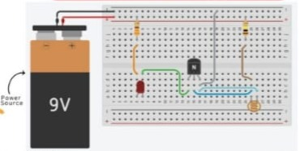

Projects
ClockWise – Multi-functional Time Management Web App
ClockWise is a modern, responsive web application built with vanilla HTML, CSS, and JavaScript, designed to offer comprehensive time management tools. It features a sleek glassmorphism user interface and adapts beautifully across various devices, providing a seamless and intuitive experience for tracking time and managing tasks.
- Real-time Digital Clock with 12/24-hour toggle and full date display.
- Precise Stopwatch with start, pause, reset, and lap recording functionalities.
- Customizable Countdown Timer with an audible alarm and visual progress bar.
- Dynamic To-Do List with task deadlines, completion tracking, and local storage persistence.
- Intuitive Dark/Light mode toggle and fully responsive design for all screen sizes.
- Leverages Web Audio API for reliable sound alerts and LocalStorage for state retention.
Civic Education Module – Civic community engagement App Feature
The Civic Education System is a modern, AI-integrated desktop application that promotes civic awareness and social responsibility through an intuitive user interface. Built with Python and PyQt5, it offers structured topic navigation, real-time search, and the ability to chat with Google's Gemini API (models/gemini-2.0-flash) for instant civic-related assistance. The green-themed UI provides a clean and accessible learning experience.
- Real-time topic search and interactive Gemini-powered chatbot
- Seamless toggling between static civic content and chat mode
- Data-driven design using a structured
topics.jsonfile - Smooth animated transitions with
QPropertyAnimation - Environment secured using dotenv for API key protection
LiveNewsModule – Civic community engagement App Feature
The Civic Participation System is a community-based platform designed to engage citizens in social and civic activities, fostering awareness and encouraging participation in governance and societal matters. This project incorporates multiple modules, each designed for a specific function. The News Module is one of the core components, which dynamically fetches and displays the latest news from top news outlets.The News Module allows users to stay updated on the latest headlines with a clean, easy-to-use interface. The module is built using PyQt5 for the GUI and Python to handle backend functionality, including fetching news data from various RSS feeds.
MindMate – AI Mental Health Chatbot
MindMate is a desktop-based mental health chatbot application designed to provide emotionally supportive conversations through a custom-trained language model. Developed in Python using PyQt5 for its user interface and MySQL for chat session storage, MindMate uses a fine-tuned version of DialoGPT-small (named mindmate_dialo) as its core language model. Unlike generic chatbots, MindMate includes structured session management, text normalization, and a local, offline-friendly conversational engine tailored for reflective mental health dialogues.
RedactedVault – Fingerprint module
RedactedVault is a stealth-mode secure vault application disguised as a fully functioning calculator. It serves privacy-conscious users by unlocking an AES-encrypted, biometric-protected (Face + Fingerprint) vault when a secret code is entered. Developed using Python, PyQt5, MySQL, and the SecuGen Hamster Plus fingerprint scanner, this app features face recognition via OpenCV and fingerprint matching via minutiae comparison. It ensures complete confidentiality for sensitive files and documents through dual-layer encryption and a deceptive UI design.
Auth2x – Fingerprint module using secugen hamster plus
Auth2X is a dual-mode biometric authentication system that supports:Face recognition (via OpenCV-based facial encoding) and Fingerprint matching (via SecuGen Hamster Plus and custom minutiae comparison)It supports encrypted storage of biometric data using Fernet AES encryption and integrates with a Tkinter GUI for both registration and authentication.
Night Light Bulb Project – Automatic Light Using LDR and Transistor



The Night Light Bulb Project is a beginner-friendly hardware mini-project designed using principles from Applied Physics. It operates as an automatic lighting system that powers an LED in darkness and switches it off in light using an LDR and a transistor. This pure hardware implementation does not require coding and offers a practical demonstration of light-based automation.
- Light sensing using LDR and transistor switching
- Fully functional on breadboard with real-time light detection
- Compact design using 9V battery and resistors
- No microcontroller or programming required
- Ideal for electronics and physics beginners
Library Management System
The Library Management System is a comprehensive Java-based desktop application developed using NetBeans that streamlines library operations. This robust system features:
- Secure user authentication with login, signup, and password recovery
- Complete CRUD operations for books and library members
- Advanced book search functionality with multiple filtering options
- Automated book issuance and return tracking with due date management
- Real-time database updates with MySQL backend
- Intuitive dashboard with key metrics and quick access to features
Built with Java Swing for the frontend and MySQL for data persistence, this system demonstrates strong skills in desktop application development and database management.